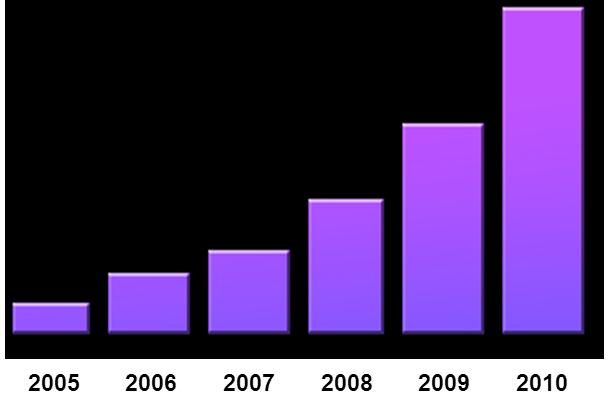
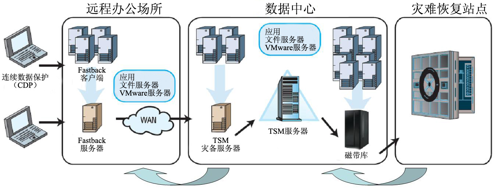
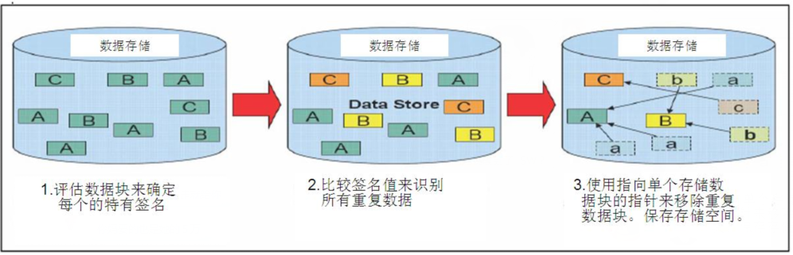

TSM数据灾备解决方案
IBM Tivoli TSM从容应对数据爆炸性增长
数据管理的需求与挑战
世界智能化、偏平化的发展趋势，使企业的数据信息以指数级持续增长。面对快速增长的数据信息，使企业的CIO承受着前所有未的压力，并迫切需要通过有效的数据管理方案实现以下目标：
- 削减总体拥有成本的同时，能够简单、高效的管理持续疯狂增长的数据
- 更长久的留存更多的数据信息，满足用户对原始数据检索、查寻需求，以及相关信息法规遵从性和安全审计的需求
- 建立有效的数据备份与恢复机制，实现“零”数据丢失，提高数据的可靠性、可用性，以保证业务运营的可持续性
IBM TSM 软件作为 IBM 服务管理战略中的重点产品，可帮助您提高效率并满足数据疯狂增长的管理需求，进而帮助企业实现以上目标。
根据IDC的一项研究，在2006年，有180 EB (1EB=1024PB) 的数据信息内容被创建、捕获或复制。据预计，这一数字到2011年将达到1,800 EB。
至 2010 年，创建和复制的数据有望增长 57% CAGR（复合年均增长率）。

IBM Tivoli Storage Manager 数据管理方案简介
IBM TSM 系列产品具有备份/恢复、归档/检索、持续数据保护、灾难恢复、分层存储管理/信息生命周期管理、应用保护、数据库保护、裸机恢复与远程办公室恢复等功能，可为各种类型的企业、各类操作系统与硬件平台（从笔记本电脑到大型机）进行统一恢复。
Tivoli Storage Manager产品功能介绍
TSM 6特性与价值主张: 统一恢复管理,改善服务质量
IBM Tivoli Storage Manager依靠存储备份以及离线存储的数据拷贝，有效保护您的企业数据，同时可保护上百台运行不同操作系统的计算机，包括笔记本电脑和大型机，通过互联网、WAN、LAN、存储管理系统的集中化管理、快速数据转移、存储技术等相互连接，协同工作，从而最小化数据保护的成本。Tivoli Storage Manager 6 是整合式端到端数据保护和统一恢复管理解决方案的核心组件，提供数据保护、数据归档、分级存储毁等一系列功能。

IBM TSM 新增特性介绍：
- 简化部署与管理
-
经过重新设计的报表系统和监控功能：大量使用预置的新型报表；报表是完全可定制的； 利用可定制的指示板提供接近实时的监控；无需额外许可。
-
更高的可用性：通过在线数据库重组，在系统运作时可以调整和优化 TSM 数据库。
- 数据管理的可扩展性得到改善
-
TSM 6 可以管理的目标文件量是已经处于行业领先地位的 TSM 5.5的两倍 ：通过单一 TSM服务器可以支持多达 10 亿个目标文件（结果可能会根据环境、系统/处理器、数据类型、过期策略、数据变化率等因素的不同而有所不同）。
-
可执行并发操作的数量增多（结果可能会根据环境、系统/处理器、数据类型、过期策略、数据变化率等因素的不同而有所不同）。
- 数据备份与处理性能大幅度提升
-
改进后的备份吞吐量可以减少备份时间窗口，或增加备份时间窗口中的数据量。
- 内置重复数据删除功能，增强数据简化

-
TSM 6 的扩充版为顺序存取的磁盘存储池提供了重复数据删除功能，无额外费用；相对于磁带而言，数据恢复时间得到了改进，可以在磁盘上存储更多的数据恢复点，且减少了所需的存储容量；支持后期处理/不影响备份性能/自动回收空间。
-
改进与 VMware 或 NetApp / N series NAS Filers 的整合，满足严格的恢复时间点目标 、恢复时间目标和业务连续性需求
IBM TSM主要功能介绍
-
先进的数据恢复技术，缩短备份和恢复时间
-
TSM存储管理软件能够为用户提供专业的数据备份功能，能够提供多种级别的数据备份，如文件系统备份，应用系统备份，数据库备份，邮件系统备份，操作系统备份等不同的备份类别。TSM能够支持绝大多数主流操作系统平台，主流的应用，根据用户需求为不同的用户定制合适的备份解决方案。
-
流程化的灾难恢复管理
-
TSM内置一个灾难恢复管理模块（DRM），通过DRM能够对灾难恢复进行规范的流程管理，包括离线磁带的跟踪和回收，能够对磁带状态进行自动设置更新，并能够对整个恢复流程提供所需要的配置信息，恢复脚本，可以指导管理员顺利的完成整个恢复过程。
-
专业的数据归档管理功能
-
TSM存储管理软件提供专业的文件系统数据归档功能。TSM提供独立的归档策略，能够为不同的数据对象指定不同的归档保存时间，并能够在归档时提供文件本地保留或从本地删除不同的选择。
-
利用分层存储提高效率、节约资源
-
TSM存储管理软件能够提供专业的文件系统分级存储功能，能够将磁带等存储设备作为文件系统的二级存储，定制策略将访问较少的文件从服务器的文件系统迁移到TSM所管理的磁带库中，并在本地保留一个存根文件，整个过程可以自动完成，也可以手动迁移。当应用系统或者管理员访问该文件时，TSM将在后台自动将文件迁移回本地。
IBM TSM 扩展功能介绍
-
Tivoli Storage Manager for Storage Area Networks
-
允许与SAN连接的存储管理系统服务器和存储管理客户端计算机最大限度的使用直接网络连接到存储。该扩展软件允许服务器和客户端计算机通过SAN而不是LAN，将大量的备份/恢复以及存档/恢复，直接传输到磁带或到存储管理系统磁盘存储层。这将会极大的减少对基于LAN的数据保护的影响，也会同时减少客户端和服务器CPU的使用。
-
IBM Tivoli Storage Manager for Databases
-
IBM Tivoli数据库存储管理器能够提供对Oracle、DB2、Informix和Microsoft SQL Server数据库的数据保护。IBM Tivoli数据库存储管理器的功能包含在IBM DB2、Informix通用数据库包内，不必再单独购买。通过TSM for DB实现重要业务数据24x7的可用性,帮助保持数据完整性。
-
Tivoli Storage Manager 6 for Mail
-
支持 Microsoft Exchange 和 IBM Domino。
-
Tivoli Storage Manager FlashCopy Manager
-
支持点对点远程复制（PPRC）源卷的 FlashCopy 恢复;增强的 SAP 环境快照支持。
-
通过 IBM SAN Volume Controller 的增量式 FlashCopy 支持，提高备份性能。
-
Tivoli Storage Manager 6 for Space Management
-
现在与 IBM General Parallel File System (GPFS) 配合使用时，Tivoli Storage Manager for Space Management 管理的文件可从一个存储池（例如，快速 RAID）转入另一个存储池（例如，较慢的 SATA 磁盘），而文件名及其目录和文件系统名将保持相同。